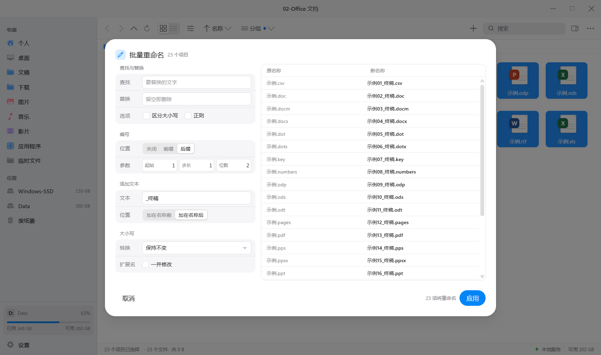

批量改名，先看结果再动手
查找替换、编号、添加前后缀、大小写，可以叠成一个配方。 右侧实时列出「原名 → 新名」，重名和非法字符当场标出来。
Windows 文件管理器
大图标、空格预览、批量改名、整盘搜索。装好就能用， 文件始终留在这台电脑上。

日常用得上的六件事
浏览、改名、搜索、解压、复制，这些事每天都在做。 Oriel 把每一件都缩短一点，让手不用离开键盘。
查找替换、编号、添加前后缀、大小写，可以叠成一个配方。 右侧实时列出「原名 → 新名」，重名和非法字符当场标出来。
选中文件按空格，图片、PDF、文档、视频都在窗口里打开。 再按一次空格收起，不用等外部程序。
zip、7z、rar 可以直接进去看目录和大小，只解压需要的那几项， 不必先把整包摊开。
默认从整块磁盘找起，空格分词、「report 2024」也能命中。 结果边扫边出现，按 Esc 立刻停。
大文件进操作中心，按字节看进度，可以暂停、继续、重试或取消。 失败时不会留下半截文件。
网格或列表、排序、分组、滚动位置，每个文件夹各自记住。 浅色深色、强调色、缩放和字体也都在设置里。
开机自启后静默进托盘，也可以把托盘藏起来。 文件夹右键菜单、默认打开方式都在设置里开关。
和资源管理器比
Oriel 不接管桌面和任务栏。它只是把每天的文件整理， 换成一个更安静、更顺手的窗口。
| 每天会碰到的事 | Windows 资源管理器 | Oriel |
|---|---|---|
| 大图标与缩略图 | 标准图标，缩略图偏小 | 网格大图标，Office、PDF、程序和快捷方式都用真实图标 |
| 快速预览 | 预览窗格常驻，占地方 | 选中按空格打开，再按一次收起 |
| 批量改名 | 只能逐个修改 | 替换、编号、前后缀、大小写任意组合，改前先看预览 |
| 搜索 | 依赖索引，通常只查当前位置 | 默认搜整块磁盘，空格分词，结果边搜边出 |
| 压缩包 | zip 可浏览，7z 和 rar 要先解压 | zip、7z、rar 都能进去逛，只解压选中的项目 |
| 复制与移动 | 一条进度条，出错只能重来 | 操作中心里可以暂停、继续、重试、取消，失败会清理半成品 |
| 文件夹记忆 | 部分场景记住视图 | 每个文件夹各自记住视图、排序、分组和滚动位置 |
| 外观 | 跟随系统 | 浅色、深色、强调色、界面缩放、字体和毛玻璃 |
| 系统集成 | 系统本身 | 开机自启、托盘、文件夹右键菜单、设为默认打开方式 |
| 文件去向 | 本机 | 本机，不上传 |
对比的是 Windows 10 / 11 自带资源管理器的默认行为，不含第三方插件。
改名
重命名弹窗左边是文件本身，右边名称和扩展名各占一行。 多选之后换成配方式面板，整批计划看完再应用。

列表
按名称、种类、日期或大小分组，滚动时组名留在顶部。 文件夹大小会真的算出来，进到视野里才开始，不挡操作。

深色
深色不是把白色反过来。分组卡、分隔线、开关和图标阴影都单独调过， 强调色在暗处依然清楚。

下载
Windows 10 / 11，64 位。安装包自带运行环境，不需要再装别的东西。 桌面、任务栏和原有的文件关联不会被改动。
安装包未签名，首次运行时 Windows 可能提示，选择「更多信息」→「仍要运行」。 应用内更新会先尝试国内镜像，再回落到 GitHub。